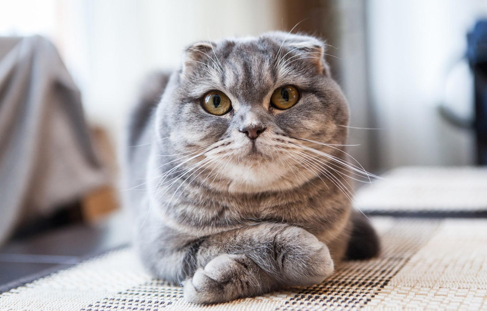

Меня зовут Саша. Мне 12 лет. Мне нравится учить что-то новое и веселиться. Мои хобби: лепка, программирование, игры в теннис и футбол.
Это мое любимое животное-кот. У меня был кот похожий на этого.
 Об вислоухих котахУ меня не очень много любимых песен. Список: